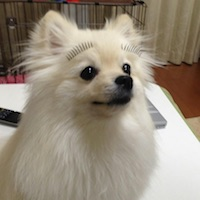

<ons-page>
    <ons-toolbar>
        <div class="left"><ons-back-button>Back</ons-back-button></div>
        <div class="center">プロフィール</div>
        <div class="right">
          <ons-toolbar-button><ons-icon icon="ion-gear-a" style="vertical-align: -4px; font-size: 28px;"></ons-icon></ons-toolbar-button>
        </div>
    </ons-toolbar>
    
    <div class="profile-card">
        
        
        <div class="profile-name">杉澤 みのり</div>
        <div class="profile-id">@sugimmm</div>
        <div class="profile-desc">チワワが大好きです。</div>
    </div>
    
    <ons-list modifier="inset" style="margin-top: 10px">
            <ons-list-item modifier="chevron">
              メッセージを送る
            </ons-list-item>
    
            <ons-list-item modifier="chevron">
              お気に入りに登録する
            </ons-list-item>
    
            <ons-list-item modifier="chevron">
              リストに登録する
            </ons-list-item>
    </ons-list>
</ons-page>